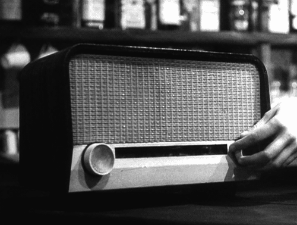

Invención de la radio


Referencias
Autor
El proyecto ha sido desarrollado por Santiago Andrés Gómez Peña, estudiante de ingeniería mecatrónica de la UNAL, para la asignatura de grafica interactiva año 2024.
Motivación
El tema abarcado fue considerado debido a los temas tratados en mi carrera, donde la comunicación inalambrica tiene una especial importancia, ademas de las situación de venir de un pueblo de Colombia, por lo cual el uso de este dispositivo de comunicación es mucho mas relevante y cotidiano que en las grandes ciudades. Aun con los nuevos avances tecnologicos resulta interesante como la radio ha conseguido encontrar un nicho de mercado gracias a los podcast y a programas de radio en linea como lo es Radio Garden.
Bibliografia
Historia de la radio - Humanidades.comMarconi y la primera transmisión de radio de la historia - National Geographic
Historia de la radio - Wikipedia
Invención de la radio - Wikipedia
Transmisión de ondas
El invento de la radio
Heinrich Rudolf Hertz
Nikola Tesla
Julio Cervera
Guillermo Marconi
Reginald Fessenden
Imagenes
Imagen de fondo[1] Imagen
[2] Imagen
[3] Imagen
[4] Imagen
[5] Imagen
[6] Imagen
[7] Imagen
[8] Imagen
[9] Imagen
[10] Imagen
[11] Imagen
[12] Imagen
[13] Imagen
[14] Imagen
[15] Imagen
Imagen del mapa interactivo
Imagen icono mapa
Gifs
Imagen radio antiguaImagen radio moderna